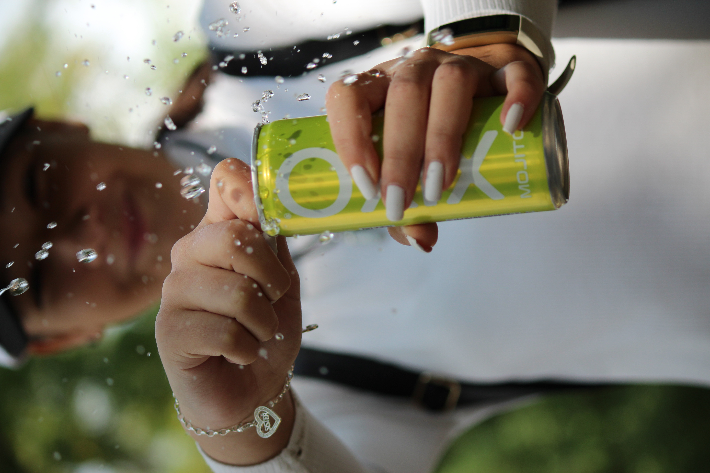
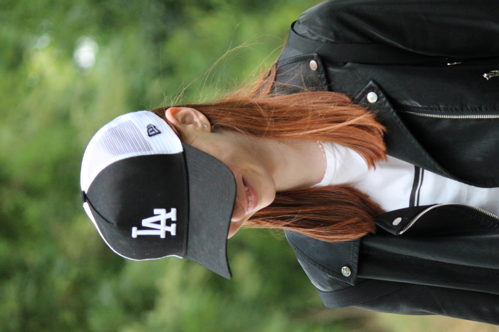

Welcome everyone to this website! My name is Levente Albert Nagy.
Some words about me:
My name is Levente the Great as I mentioned. I am a Lonyay Utcai Református Gimnázium student. I was born in 2006, in Budapest. I live in Alsónémedi, with my parents, two sisters and our kitten Bufi. One of my sisters is 14 years old who want to be Lonyay student and other sister is a cute little first grader. I played basketball at school for 1 year and rode for half a year. I have been playing the flute for 8 years and have been learning clarinet for 1 year now, in which I have more and more success.I spend most of my free time either in front of the computer or go to our village with my camera with my personal model for more pictures.
What do I do in my free time ?:Take same pictures! and that's all Sometimes i go outside with my personal model and my camera. The model's name is Anna. She is my best friends. We are take many pictures together, and i very enjoy teaching her.My newest plan, making a short video with my former classmate. When the video will be very good i want to apply.
Here are some pictures I did, we did:

